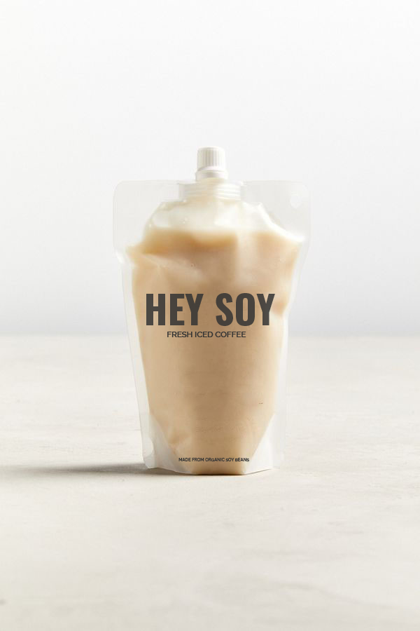

HEY SOY
OM PRODUKTET
Soyamælk, kommer fra tørrede sojabønner der blendes med vand. Mælken indeholder mindre fedt, men flere kulhydrater end de andre slags plantebaseret mælk. Soya mælk er 100% laktose og glutenfrit. Soya mælk er miljømæssigt også en af de bedste alternativer som erstatning for komælk.